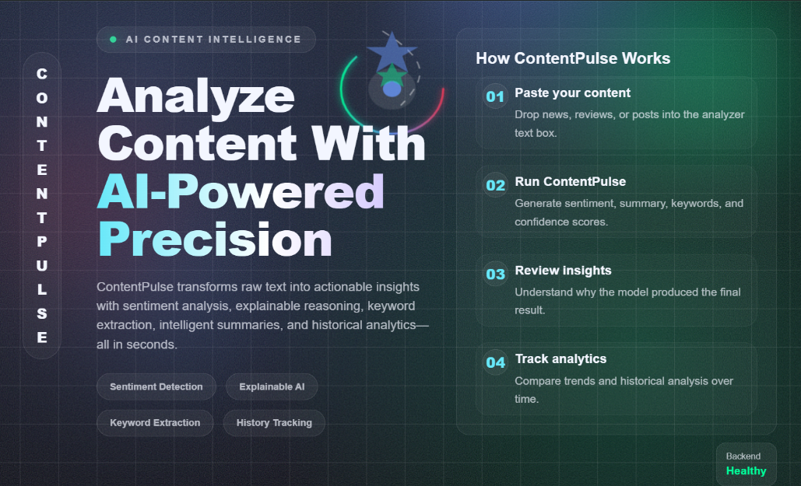
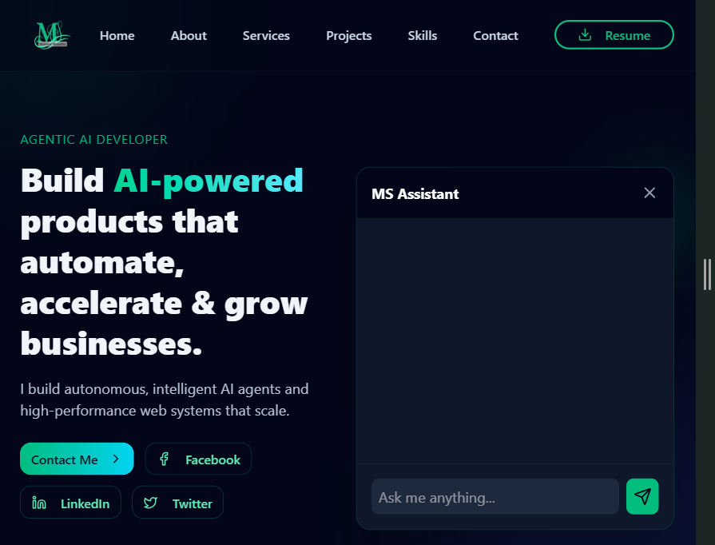
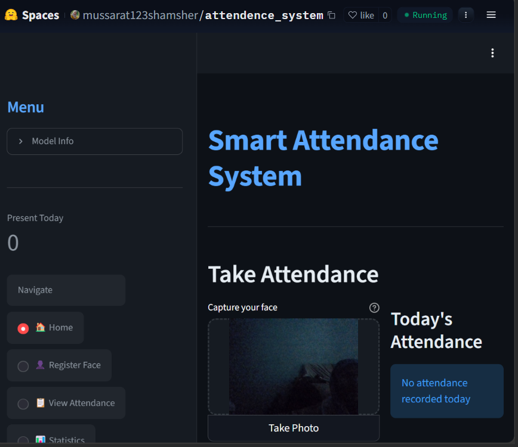
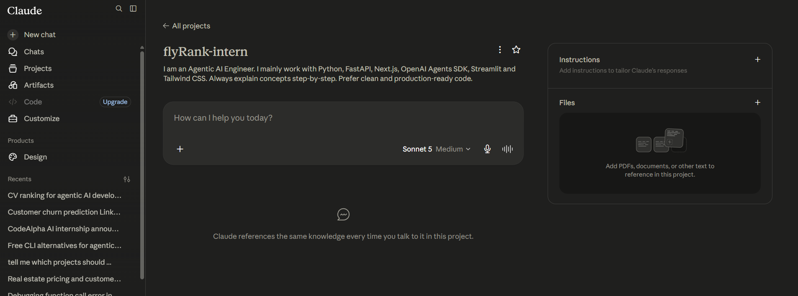
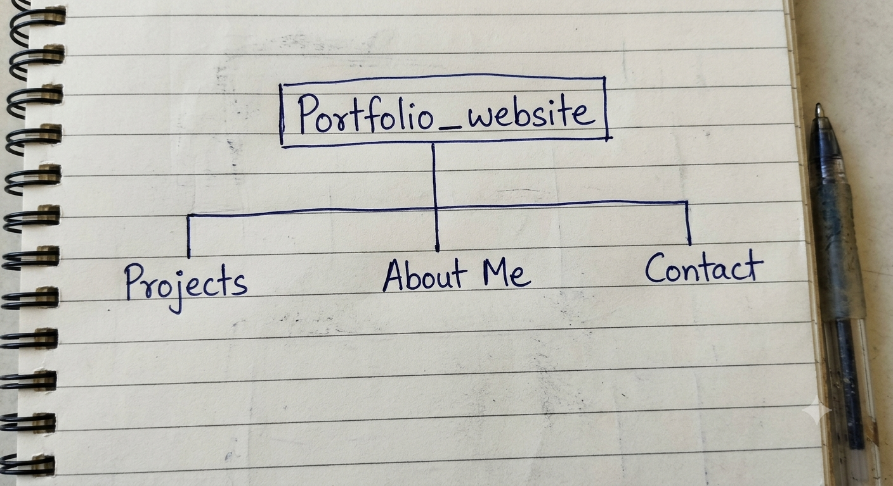

Curated Image Set
Mussarat Shamsher — Portfolio Visual Inventory
A ruthlessly curated set of images that serve my proof statement. Each image is chosen for a specific purpose: real captures where credibility matters, AI-generated only for connective tissue, and a real photo where the subject is me. Every decision is annotated below.
The Keepers
Every image below maps to a specific need in the content map. Real captures are screenshots of actual work from earlier weeks. AI-generated images share a consistent style — purple-teal mood, geometric-organic textures — matching the Identity Kit. Images marked Needs Capture are not yet available and need to be created with the instructions provided.
Hero & Personal
A clean, professional headshot against a neutral background. Used on the About section and as the primary personal identifier across the portfolio.
profile.jpg in this folder,
then update the src in the 
Why real: The subject here is me. Using an AI-generated portrait would be dishonest for a portfolio claiming AI expertise.
A subtle geometric-organic texture in purple and teal gradients. Adds visual depth to hero sections without distracting from content.
hero-texture.jpg.
Why AI: Decorative connective tissue — no real work to screenshot. AI allows precise colour control.
Project Work — Real Captures

Screenshot of the Content Analyzer showing the input text area and results panel with summary, keywords, and content type classification. Captured from the live deployed app (Next.js + FastAPI + Hituistic-v1 model).
File:
Week-02/1-Case_Study/screenshots/1kWZJJbstK.png

Screenshot of a conversation with the Portfolio AI Agent. Shows a user asking about skills and the agent retrieving accurate information from the vector database, demonstrating the RAG pipeline with guardrails.
File:
Week-02/1-Case_Study/screenshots/portfolio-claude.png

Screenshot of the attendance dashboard showing the webcam feed, face registration panel, and the daily attendance log with timestamps. Built with Python + Streamlit, deployed on Hugging Face Spaces.
File:
Week-02/1-Case_Study/screenshots/z23zosUZ0Y.png
Process & Evidence — Real Captures

Screenshot captured during Week 01 workflow audit. Shows the Claude project interface with iterative prompt engineering, debugging sessions, and content drafting.
File:
Week-01/2-Workflow_audit/screenshots/claude-project.png

Hand-drawn sitemap sketch from Week 01 showing the portfolio structure with Projects prioritized above About, plus the Contact section.
File:
Week-01/3-Portfolio_sitemap/portfolio_sktech.png
Connective Tissue — AI-Generated (Consistent Style)
A set of 4 small brand icons (Projects, About, Contact, Skills) in a consistent minimalist line-art style. Purple stroke on off-white background, rounded corners, geometric simplicity matching the MS monogram.
icons.svg or separate
icon-*.svg files.
Why AI: Icons are decorative. AI generates a cohesive set faster than sourcing from mismatched libraries.
A simple architectural visual showing the tech stack — Python, FastAPI, Next.js, PostgreSQL — arranged in a clean typographic layout with subtle connecting lines. Purple/teal colour palette.
tech-stack.png.
Why AI: Summary visual — architecture is proven by real project screenshots above.
Rejection Log
Discernment is graded. Here are three AI-generated images I rejected — and the genuine reasoning behind each cut.
Real vs. AI — Decision Map
A clear breakdown of where real captures were deliberately chosen over AI generation, and why.
| Image | Final Choice | Decision Rationale |
|---|---|---|
| Profile Photo | Real Photo | The subject is me. A real photo builds trust. AI portrait rejected. |
| Content Analyzer UI | Real Capture | Real app exists. Screenshot proves it works. Mockup would mislead. |
| Portfolio Agent Chat | Real Capture | Shows actual RAG response quality and guardrail behaviour. |
| Attendance System UI | Real Capture | Demonstrates real facial recognition and webcam integration. |
| Workflow Audit | Real Capture | Evidence of actual AI-assisted process. Must be authentic. |
| Sitemap Sketch | Real Capture | Raw planning artifact. Authenticity over polish. |
| Hero Background | AI-Generated | Decorative connective tissue. AI allows precise brand colour control. |
| Section Icons | AI-Generated | Purely decorative. Consistent style via AI beats mismatched libraries. |
| Tech Stack Visual | AI-Generated | Summary visual, not evidence. AI controls layout and style consistency. |
6 real captures for everything that proves my work — project UIs, process evidence, and my own face. 3 AI-generated images only for decorative connective tissue (hero texture, icons, tech visual), all in consistent purple/teal style. Rejected 3 AI generations: a fake portrait (dishonest), a mockup (misleading when real app exists), and a warm-toned hero (style mismatch — fixed with 4 prompt iterations).